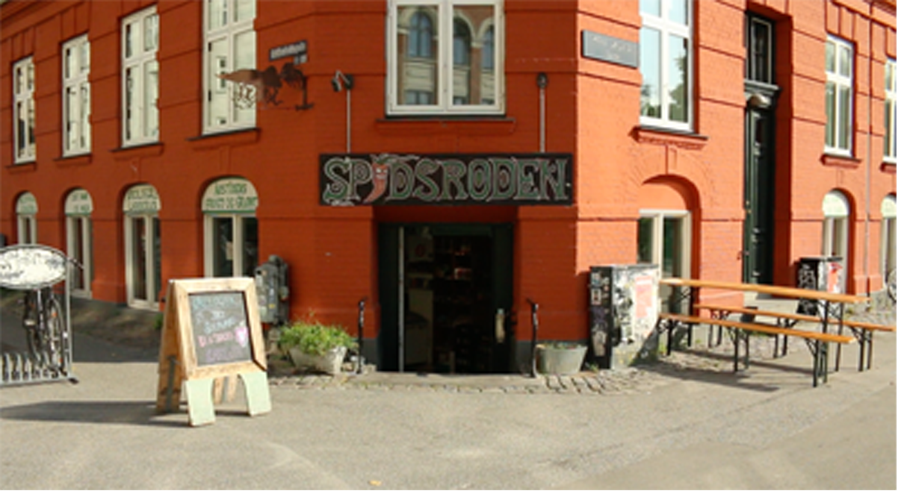

Kontakt

Spidsroden er en økologisk dagligvarebutik på Nørrebro. Butikken startede i 1997 og er siden 2015 blevet kooperativt drevet. Vi går ind for social og miljømæssig ansvarlighed og vi forsøger derfor så vidt som muligt at få lokale varer, handle med mindre firmaer, firmaer med en stærk miljøvenlig profil, der går op i social ansvarlighed og fair handel. Derudover har vi en stærk boykot-politik af Israelske varer.
Vi er seks personer der til daglig står for driften af butikken, som alle brænder for at fremme og udbrede økologiske, bæredygtige og veganske varer. Da vi åbnede på ny i 2015 udvidede vi med et lille café-område hvor der er plads til at nyde en kop kaffe og hvor de mindste har plads til at lege. Vi har desuden ugentlige økologiske frugt- og grøntkasser og tilbyder varelevering i København.
Vi kører ud hver mandag og kan tilbyde årstidens frugt og grønt samt alt fra sojadrik til opvaskemiddel. Priserne er 50,- for frugtpose og 100,- for grøntpose. Aftaler om levering kan laves ved at skrive en mail eller komme forbi butikken til en snak. Der er også mulighed for selv at afhente en kasse pakket efter aftale hver mandag efter 10:00.